HTML-код
<a href="#css-showcase">CSS</a>
<button type="submit">Зберегти завдання</button>
<textarea id="comment" name="comment"></textarea>HTML-документ, семантична розмітка, GitHub, бізнес-логіка WEB-застосунку, CSS, JavaScript, об'єкти, callback, стрілочні функції, DOM, події, делегування подій, Web Storage API, асинхронність, проміси, REST API і пагінація.
| Виконав | Єрещенко М.О., студент групи ІП-зп51 |
|---|---|
| Тема ЛР №1.1 | HTML-документ, семантична структура сторінки, GitHub, репозиторії та бізнес-логіка власного WEB-застосунку. |
| Мета ЛР №1.1 | Отримати практичні навички роботи з HTML-документом, семантичною версткою, таблицями, зображеннями, списками, формами, посиланнями та описом логіки WEB-застосунку. |
| Назва власного WEB-застосунку | StudyTask - навчальний планувальник завдань студента. |
| Локальне розташування WEB-застосунку | IP-zp51_appWEB-YereshchenkoMO-FIOT-2025/index.html |
| Репозиторій WEB-застосунку | IP-zp51_appWEB-YereshchenkoMO-FIOT-2025 |
| Жива сторінка WEB-застосунку | GitHub Pages WEB-застосунку |
| Репозиторій звітного HTML-документа | IP-zp51_appRECORD-YereshchenkoMO-FIOT-2025 |
| Жива сторінка звітного HTML-документа | GitHub Pages звітного HTML-документа |
Тема застосунку - планування навчальних завдань студента за дисциплінами, дедлайнами, пріоритетами та статусом виконання.
Мета створення StudyTask - надати студенту простий інструмент для контролю навчального навантаження, щоб своєчасно бачити актуальні лабораторні роботи, етапи виконання та найближчі дедлайни.
Предметна область застосунку охоплює індивідуальне планування навчання. Користувачем є студент, який створює завдання, прив'язує їх до дисциплін, визначає дедлайн, пріоритет і статус виконання.
Основний процес: студент додає завдання, система показує його у таблиці, виділяє найближчі дедлайни та допомагає контролювати прогрес виконання. Детальний опис винесено на сторінку business-logic.html.
| Тип вимог | Опис |
|---|---|
| Функціональні | Додавання навчального завдання через форму; відображення задач у таблиці; збереження дисципліни, дедлайну, статусу та пріоритету; перехід на сторінку бізнес-логіки; показ короткої статистики тижня. |
| Нефункціональні | Семантична HTML-структура; адаптивність для різних екранів; доступні поля форми з label; зрозуміла навігація; швидке завантаження сторінок; мінімізація зайвих персональних даних. |
Головна сторінка побудована за принципами семантичної верстки. Використано елементи header, nav, main, section, article, aside, figure, figcaption та footer.
<header class="site-header">
<a class="brand" href="index.html">StudyTask</a>
<nav class="site-nav" aria-label="Основна навігація">
<a href="#schedule">Розклад</a>
<a href="#features">Можливості</a>
<a href="#request">Додати завдання</a>
<a href="business-logic.html">Бізнес-логіка</a>
</nav>
</header>
<main>
<section class="hero" aria-labelledby="hero-title">...</section>
<section id="schedule" class="panel">...</section>
<section id="features" class="panel">...</section>
<section id="request" class="panel">...</section>
</main>
Для таблиць застосовують теги table, caption, thead, tbody, tr, th і td. Атрибут scope допомагає пов'язати заголовок із рядком або стовпцем, а colspan та rowspan об'єднують комірки.
<table class="schedule-table">
<caption>Поточний навчальний тиждень студента</caption>
<thead>
<tr>
<th scope="col">Дисципліна</th>
<th scope="col">Завдання</th>
<th scope="col">Дедлайн</th>
<th scope="col">Статус</th>
<th scope="col">Пріоритет</th>
</tr>
</thead>
<tbody>
<tr>
<td>Основи клієнтських розробок</td>
<td>ЛР №1: семантична HTML-сторінка</td>
<td><time datetime="2026-06-10">10.06.2026</time></td>
<td><span class="tag hot">у роботі</span></td>
<td>Високий</td>
</tr>
</tbody>
</table>
Для вставлення зображення використовується тег img. Обов'язковим для доступності є атрибут alt, який описує вміст зображення. Атрибути src, width і height задають шлях до файлу та його розміри.
<figure class="hero-media">
<img src="assets/study-dashboard.svg"
alt="Ілюстрація панелі StudyTask з курсами, дедлайнами і планом занять"
width="960"
height="560">
<figcaption>Приклад майбутньої панелі контролю навчального навантаження.</figcaption>
</figure>
Маркірований список створюється тегом ul, нумерований - тегом ol, а кожен пункт списку розміщується у li. Атрибут type може змінювати тип маркера або нумерації.
<ul>
<li>додавання навчальних завдань;</li>
<li>перегляд таблиці дедлайнів;</li>
<li>фільтрація задач за дисципліною та статусом;</li>
</ul>
<ol>
<li>студент відкриває панель StudyTask;</li>
<li>переглядає актуальні дедлайни;</li>
<li>додає нове завдання через форму;</li>
</ol>
Типова структура містить doctype, кореневий елемент html, службову частину head з метаданими та видиму частину body з контентом сторінки.
Тег - це елемент мови HTML, який позначає структуру або призначення частини документа. Більшість тегів мають відкривальну і закривальну форму, наприклад <p>...</p>.
Основні теги: table, caption, thead, tbody, tfoot, tr, th, td, colgroup, col.
Найчастіше використовують img, figure, figcaption, picture і source.
Для списків використовують ul, ol, li, а для списків визначень - dl, dt, dd.
Таблиці описують через заголовок caption, рядки tr, клітинки td, заголовкові клітинки th, групи рядків thead, tbody, tfoot, атрибути scope, colspan і rowspan.
У лабораторній роботі №1 створено HTML-структуру власного WEB-застосунку StudyTask і звітний HTML-документ. На головній сторінці застосовано семантичні теги, заголовки різних рівнів, зображення, таблицю, маркірований і нумерований списки, форму та посилання на сторінку з бізнес-логікою. У звіті наведено тему, мету, опис предметної області, вимоги, приклади HTML-коду, теоретичні відомості та відповіді на контрольні питання.
Тема: стильове оформлення елементів в HTML-документах. Каскадні таблиці стилів. Селектори тегу, класу та ідентифікатора.
| Мета | Придбати практичні навички роботи з CSS-селекторами, ідентифікаторами, списками, властивостями кольору і фону, зовнішніми та внутрішніми відступами, контурами, таблицями й оформленням текстових елементів. |
|---|---|
| WEB-застосунок | StudyTask: CSS-showcase |
| Резюме | Локальна HTML-сторінка резюме у WEB-дистрибутиві |
| GitHub/GitHub Pages | WEB-репозиторій, резюме на GitHub Pages. |
У роботі використано зовнішній спосіб підключення CSS: окремий файл стилів приєднано через тег link у частині head. Такий підхід зручний для повторного використання стилів і підтримки структури проєкту.
<link rel="stylesheet" href="assets/app.css">Також у CSS застосовано каскадування: загальні правила задаються для тегів, а точніші правила класів, ідентифікаторів та комбінованих селекторів уточнюють оформлення конкретних блоків.
Селектор тегу застосовується до всіх HTML-елементів певного типу. У WEB-застосунку він використаний для посилань, кнопок, полів форми, таблиць та інших базових елементів.
<a href="#css-showcase">CSS</a>
<button type="submit">Зберегти завдання</button>
<textarea id="comment" name="comment"></textarea>a {
color: var(--brand-2);
}
button {
border: 1px solid var(--brand);
color: #ffffff;
background: var(--brand);
}
textarea {
min-height: 104px;
resize: vertical;
}
Клас використовується для повторного оформлення групи елементів. У блоці CSS-showcase картки мають спільний клас selector-card, а окремий варіант оформлення задається класом accent-card.
<article class="selector-card">
<h3>Селектор тегу</h3>
<p>...</p>
</article>
<article class="selector-card accent-card">
<h3>Селектор класу</h3>
<p>...</p>
</article>.selector-card {
padding: 18px;
border: 2px solid #d4e1dd;
border-radius: 8px;
background: #ffffff;
}
.accent-card {
background: #fff6ee;
border-color: #efc7a9;
}
selector-card і accent-card.
Ідентифікатор задає унікальний елемент сторінки. У застосунку секція CSS у StudyTask має ідентифікатор css-showcase, який використовується для навігації та окремого фону.
<section id="css-showcase" class="panel css-lab-panel">
<h2 id="css-title">CSS у StudyTask</h2>
</section>#css-showcase {
background: linear-gradient(180deg, #ffffff 0%, #f1f7f4 100%);
}
#css-showcase > h2 {
color: var(--brand);
text-transform: uppercase;
}
#css-showcase.Додатково використано універсальний селектор, дочірній селектор, сусідній селектор і селектор атрибута. Вони допомагають точніше задавати правила без зайвих класів.
* {
box-sizing: border-box;
}
.selector-board > article {
min-height: 168px;
}
.selector-card + .selector-card {
border-style: dashed;
}
.selector-card[data-state="active"] {
background: #eef3ff;
border-color: #8ea8ef;
}
input[required],
textarea[placeholder] {
border-color: var(--brand-2);
}
У застосунку використано системний шрифт, керування розміром і вагою тексту, фонові кольори, контури, внутрішні та зовнішні відступи, стилізацію таблиць і багаторівневих списків. До просунутих CSS-прийомів належать CSS-змінні, Grid, Flexbox, media query, псевдокласи та nth-child.
:root {
--brand: #24433c;
--brand-2: #17775e;
}
.css-demo-grid {
display: grid;
grid-template-columns: minmax(0, 0.9fr) minmax(0, 1.1fr);
gap: 18px;
}
.mini-table tr:nth-child(even) td {
background: #eef8f4;
}
@media (max-width: 820px) {
.selector-board,
.css-demo-grid {
grid-template-columns: 1fr;
}
}
Для резюме створено окрему сторінку з власним CSS-файлом. Макет містить бічну панель з фото-зоною та контактами, основний блок з освітою, навчальними проєктами й описом CSS-оформлення.
<link rel="stylesheet" href="assets/resume.css">.resume-page {
display: grid;
grid-template-columns: 300px minmax(0, 1fr);
}
.resume-sidebar {
color: #ffffff;
background: var(--green);
}
CSS використовується для опису зовнішнього вигляду HTML-документа: кольорів, шрифтів, відступів, розміщення блоків, адаптивності та станів елементів.
Основні методи: зовнішній CSS-файл через link, внутрішній блок style у head та inline-стилі через атрибут style.
Каскадування визначає, яке правило буде застосоване при конфлікті селекторів. Спадкування передає частину властивостей від батьківського елемента до дочірніх, наприклад колір тексту або шрифт.
Селектор тегу записується назвою елемента, наприклад button. Селектор класу починається з крапки, наприклад .selector-card.
Ідентифікатор задає унікальний елемент сторінки, може використовуватися для CSS-правил, JavaScript-звернень і як якір для навігації.
До оформлення тексту належать font-family, font-size, font-weight, line-height, color, text-transform, text-align.
У лабораторній роботі №2 застосовано каскадні таблиці стилів для оформлення WEB-застосунку StudyTask, звітного HTML-документа та сторінки резюме. Продемонстровано селектори тегу, класу, ідентифікатора, універсальний, дочірній, сусідній та атрибутний селектори. Також використано CSS-властивості для шрифтів, тексту, фону, контурів, таблиць, багаторівневих списків і адаптивного макета.
Тема: основи JavaScript у HTML-документі, шаблонні рядки, керування порядком обчислень, масиви, методи масивів і функції.
| Мета | Придбати практичні навички роботи з конструкціями мови JavaScript, масивами та функціями у JS-сценаріях. |
|---|---|
| WEB-застосунок | StudyTask: сторінка ЛР №4 JavaScript |
| Варіант | Номер у списку групи: 5. Для задач №1-6 та №8 використано непарну колонку, для задач №7 і №9 виконано варіант 5. |
| GitHub/GitHub Pages | WEB-репозиторій, сторінка ЛР №4 на GitHub Pages. |
Умова: зберегти введене значення у змінну, вивести його у Console, перевірити знак числа та показати результат через alert().
function classifyNumber(value) {
const number = Number(value);
if (Number.isNaN(number)) return "Некоректне значення";
if (number > 0) return "Число додатнє";
if (number < 0) return "Число від'ємне";
return "Число дорівнює нулю";
}
Умова: запитати число 1-4 і через switch-case визначити пору року.
function getSeason(number) {
switch (String(number).trim()) {
case "1": return "зима";
case "2": return "весна";
case "3": return "літо";
case "4": return "осінь";
default: return "невідоме значення";
}
}
switch-case.Умова: перевірити логіни Admin/User та відповідні паролі, використати prompt(), alert() і console output.
const credentials = { Admin: "admin123", User: "user123" };
function authenticate(login, password) {
if (login === null || String(login).trim() === "") return "Cancelled";
const normalizedLogin = String(login).trim();
if (!Object.hasOwn(credentials, normalizedLogin)) return "I don't know you";
if (password === credentials[normalizedLogin]) return `Hello, ${normalizedLogin}`;
return "Wrong password";
}
Умова: оголосити функцію для повідомлення про купівлю ремонтних дроїдів.
function makeTransaction(quantity, pricePerDroid) {
const totalPrice = quantity * pricePerDroid;
return `You ordered ${quantity} droids worth ${totalPrice} credits!`;
}
makeTransaction(5, 3000).Умова: перевірити рядок на слова spam і sale незалежно від регістру.
function checkForSpam(message) {
const normalized = String(message).toLowerCase();
return normalized.includes("spam") || normalized.includes("sale");
}
Умова: повернути новий масив лише з тих чисел, які більші за задане значення.
function filterArray(numbers, value) {
const filtered = [];
for (const number of numbers) {
if (number > value) filtered.push(number);
}
return filtered;
}
[1, 8, 3, 14, 5, 21] за значенням 7.Умова варіанта 5: створити одновимірний масив, визначити максимальне та мінімальне значення серед елементів із парними та непарними номерами, після цього упорядкувати масив за спаданням методом вибору.
function processVariantFiveArray(numbers) {
const source = [...numbers];
return {
source,
oddPositions: getPositionStats(source, 1),
evenPositions: getPositionStats(source, 0),
sorted: selectionSortDescending(source),
};
}
Умова: створити двовимірний масив додатних і від'ємних чисел, вивести його у Console, створити масив додатних і масив від'ємних чисел, третій елемент у додатному масиві замінити на від'ємне значення.
function splitMatrixNumbers(matrix, replacementValue) {
const flat = matrix.flat();
const positives = flat.filter((number) => number > 0);
const negatives = flat.filter((number) => number < 0);
const updatedPositives = [...positives];
updatedPositives[2] = Number(replacementValue);
return { matrix, positives, negatives, updatedPositives };
}
Умова варіанта 5: реалізувати перегляд зображень за таймером, налаштування розміру зображень, циклічність перегляду та зміну часу між переключеннями.
function startSlideshow() {
const interval = Number(document.getElementById("slideshow-interval").value);
stopSlideshow();
slideshowState.timerId = setInterval(
() => changeSlide(1),
Math.max(Number.isFinite(interval) ? interval : 1500, 500)
);
}
function changeSlide(direction) {
const nextIndex = slideshowState.currentIndex + direction;
slideshowState.currentIndex =
(nextIndex + slideshowImages.length) % slideshowImages.length;
renderSlideshow();
}
Кнопка "Запустити всі демо" на сторінці WEB-застосунку виконує всі задачі з фіксованими тестовими значеннями і дублює результат у браузерну Console та блок Console output.

У лабораторній роботі №4 реалізовано задачі з основ JavaScript: використано prompt(), alert(), шаблонні рядки, switch-case, функції, одновимірні й двовимірні масиви, методи масивів, сортування вибором за спаданням і слайд-шоу для варіанта 5. Для перевірки створено окрему сторінку WEB-застосунку з кнопками запуску задач, інтерактивними елементами і console output.
Тема: об'єкт, методи об'єкта, масив об'єктів, деструктуризація об'єктів, callback, стрілочні функції, стрілочні функції як callback та перебираючі методи масиву.
| Мета | Придбати практичні навички роботи з об'єктами, методами об'єкта, масивами об'єктів, callback-функціями, стрілочними функціями та перебираючими методами масивів у JavaScript. |
|---|---|
| WEB-застосунок | StudyTask: сторінка ЛР №5 JavaScript |
| Варіант | Номер у списку групи: 5, тобто непарний номер. Завдання №1: варіанти 1, 3, 5, 7, 9, 10. Завдання №2: варіанти 1, 3, 5, 7. |
| GitHub/GitHub Pages | WEB-репозиторій, сторінка ЛР №5 на GitHub Pages. |
Для непарного номера виконано варіанти 1, 3, 5, 7, 9 і 10. У реалізації використано callback-функції, стрілочні функції, Object.entries(), map(), filter(), sort(), flatMap() та reduce().
function createProduct(obj, callback) {
const product = {
id: nextProductId(),
...obj,
};
const callbackResult = callback(product);
return { product, callbackResult };
}
function logProduct(product) {
console.log("logProduct:", product);
return `Товар ${product.id}: ${product.name}, ціна ${product.price}`;
}
function logTotalPrice(product) {
const totalPrice = product.price * product.quantity;
return `Загальна вартість ${product.name}: ${totalPrice} грн`;
}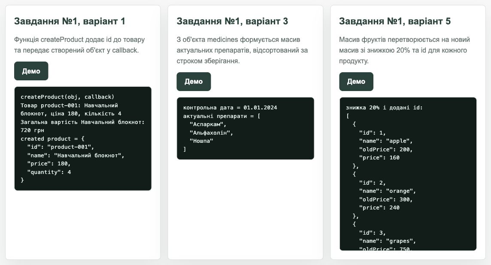
class Client {
#login;
#email;
constructor(login, email) {
this.#login = login;
this.#email = email;
}
get login() { return this.#login; }
set login(value) { this.#login = value; }
get email() { return this.#email; }
set email(value) { this.#email = value; }
}
function countTags(tweets) {
return tweets
.flatMap((tweet) => tweet.tags)
.reduce((accumulator, tag) => {
accumulator[tag] = (accumulator[tag] || 0) + 1;
return accumulator;
}, {});
}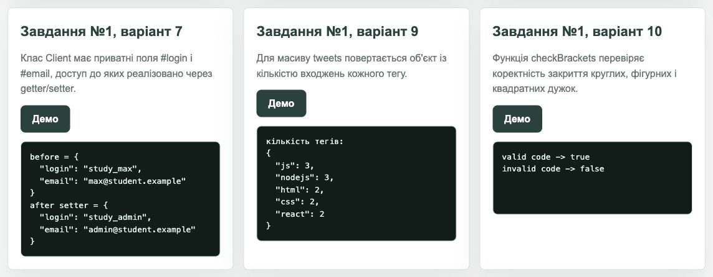
Для завдання №2 виконано варіанти 1, 3, 5 і 7: об'єднання масивів значень, перевірка парності, сортування рядків і клас Calculator з підтримкою method chaining.
function flattenValues(data) {
return data.flatMap((item) => item.values);
}
function areAllEven(numbers) {
return numbers.every((number) => number % 2 === 0);
}
function sortStringsAlphabetically(strings) {
return [...strings].sort((left, right) => left.localeCompare(right));
}
class Calculator {
number(value) { this.result = value; return this; }
add(value) { this.result += value; return this; }
subtract(value) { this.result -= value; return this; }
multiply(value) { this.result *= value; return this; }
divide(value) {
if (value === 0) throw new Error("Ділення на нуль неможливе");
this.result /= value;
return this;
}
getResult() { return this.result; }
}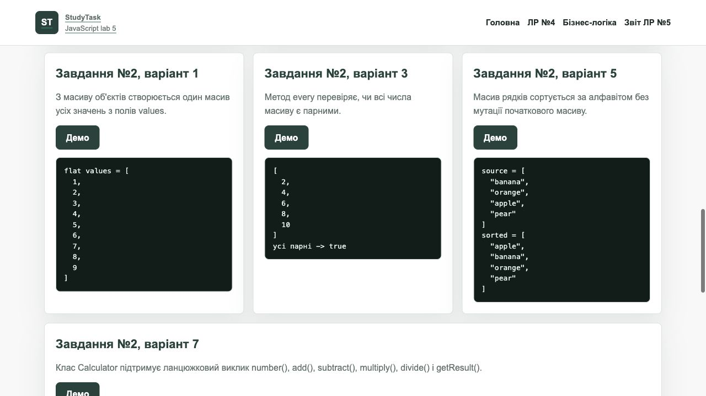
Кнопка "Запустити всі демо" на сторінці WEB-застосунку виконує всі задачі ЛР №5 з фіксованими контрольними даними і дублює результат у браузерну Console та блок Console output.
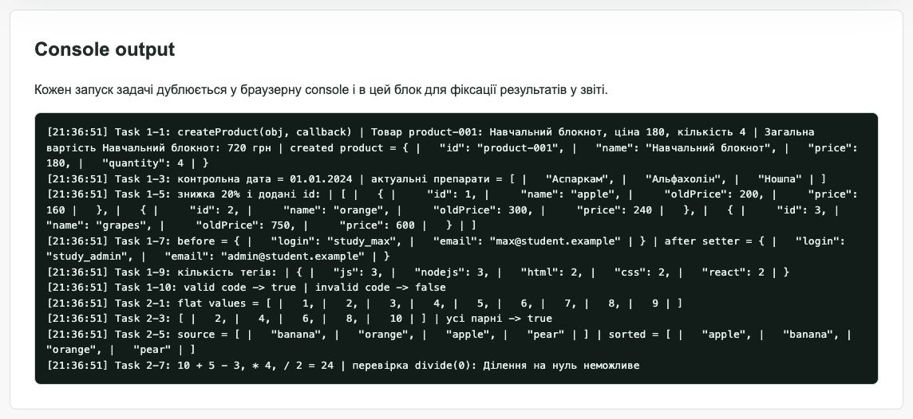
Calculator.
У лабораторній роботі №5 реалізовано задачі з об'єктами, callback-функціями, класами з приватними полями, стрілочними функціями та перебираючими методами масивів. Для перевірки створено окрему сторінку WEB-застосунку з кнопками запуску задач, console output і експортом функцій у window.Lab5 для автоматизованих executable-перевірок.
Тема: прототипи, класи, об'єктна модель документа DOM, події, об'єкт події та делегування подій.
| Мета | Придбати практичні навички роботи з DOM, подіями, об'єктом події та делегуванням подій. |
|---|---|
| Постановка задачі | У власному WEB-застосунку створити програмний код делегування подій: при виборі елемента в колекції елементів відкривається модальне вікно з описом цього елемента. Використовуючи JavaScript, виконати варіанти 1, 3, 5, 7, 8, 9 і 10 для непарного номера у списку групи. |
| WEB-застосунок | StudyTask: сторінка ЛР №6 DOM і події |
| HTML/CSS/JS-файли | lab6-dom.html, style.css, assets/lab6.js |
| Варіант | Номер у списку групи: 5, тобто непарний номер. Виконано варіанти 1, 3, 5, 7, 8, 9 і 10. |
| GitHub/GitHub Pages | WEB-репозиторій, сторінка ЛР №6 на GitHub Pages. |
Для прикладу делегування створено колекцію навчальних матеріалів. Один слухач події на контейнері #materials-list знаходить обраний елемент через closest(), після чого відкриває модальне вікно з описом. Для демонстрації прототипів і класів використано клас StudyMaterial та метод у прототипі.
class StudyMaterial {
constructor(id, title, description, duration) {
this.id = id;
this.title = title;
this.description = description;
this.duration = duration;
}
getSummary() {
return `${this.title}: ${this.description}`;
}
}
StudyMaterial.prototype.getMeta = function () {
return `Орієнтовний час опрацювання: ${this.duration}.`;
};
function handleMaterialDelegation(event) {
const selected = event.target.closest("[data-material-id]");
const list = event.currentTarget;
if (!selected || !list.contains(selected)) {
return;
}
const material = getMaterialById(selected.dataset.materialId);
openMaterialModal(material);
}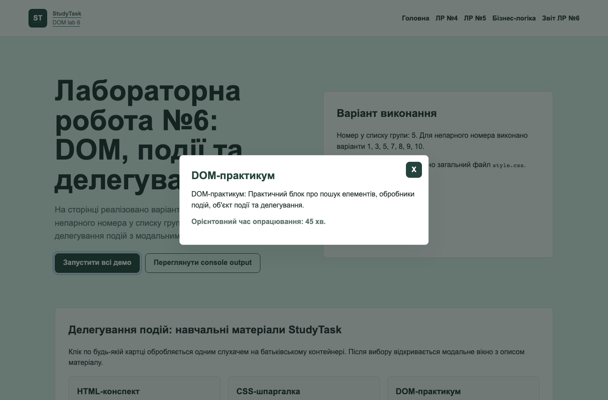
Варіант 1 виводить значення input у console. Варіант 3 приховує і розкриває текст, змінюючи стан кнопки. Варіант 5 слухає клік на window і визначає, чи знаходиться ціль кліку всередині div#place.
function showInputValue(value) {
const message = `SHOW ME: ${value}`;
writeOutput("1", message);
return message;
}
function toggleSecretText(input, button, preview) {
const isHidden = input.type === "password";
if (isHidden) {
input.type = "text";
preview.textContent = input.value;
button.textContent = "Приховати";
return input.value;
}
const masked = "*".repeat(input.value.length);
input.type = "password";
preview.textContent = masked;
button.textContent = "Розкрити";
return masked;
}
function isClickInsidePlace(target, placeElement) {
return Boolean(placeElement && (target === placeElement || placeElement.contains(target)));
}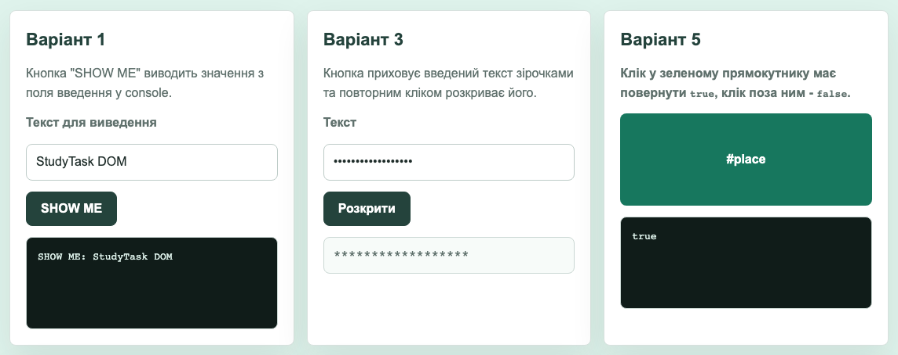
Варіант 7 аналізує список ul#categories через DOM-навігацію та forEach(). Варіант 8 обробляє форму логіна за подією submit, не перезавантажує сторінку, перевіряє заповнення полів через JavaScript і збирає дані через elements.
function analyzeCategories(categoriesRoot) {
const items = [...categoriesRoot.querySelectorAll(":scope > .item")];
return {
count: items.length,
categories: items.map((item) => ({
title: item.querySelector("h2, h3").textContent.trim(),
elements: item.querySelectorAll("ul > li").length,
})),
};
}
function collectLoginData(form) {
const email = form.elements.email.value.trim();
const password = form.elements.password.value.trim();
if (!email || !password) {
return { ok: false, message: "All form fields must be filled in" };
}
return { ok: true, data: { email, password } };
}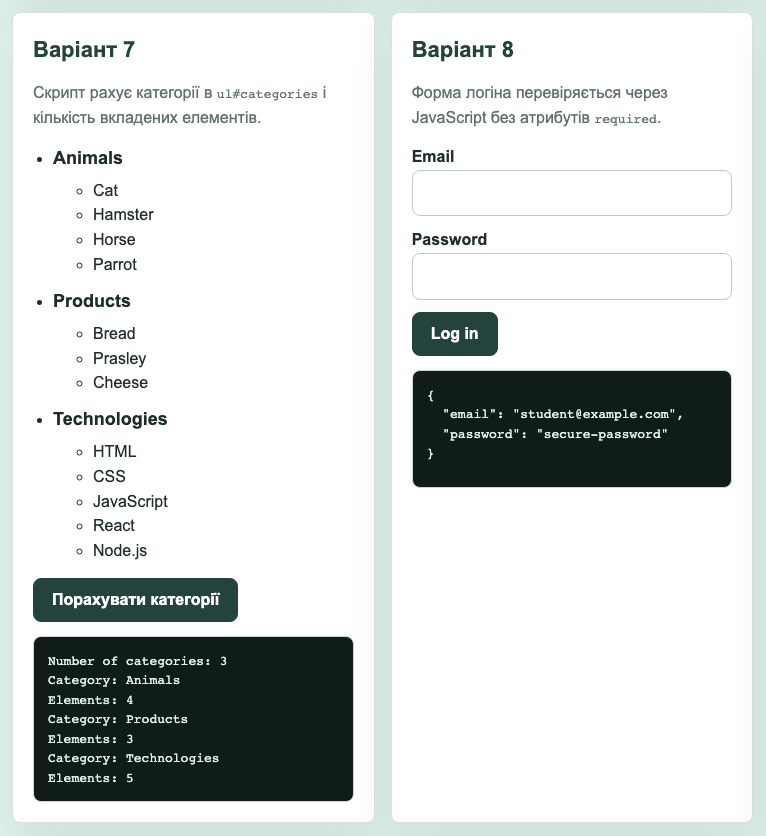
Варіант 9 змінює фон сторінки випадковим hex-кольором і записує значення у span.color. Варіант 10 створює та очищає колекцію блоків у div#boxes з перевіркою кількості від 1 до 100.
function getRandomHexColor() {
return `#${Math.floor(Math.random() * 16777215)
.toString(16)
.padStart(6, "0")}`;
}
function createBoxes(amount, container = document.getElementById("boxes")) {
const normalizedAmount = Number(amount);
if (!Number.isInteger(normalizedAmount) || normalizedAmount < 1 || normalizedAmount > 100) {
writeOutput("10", "Введіть ціле число від 1 до 100.");
return [];
}
container.innerHTML = "";
const fragment = document.createDocumentFragment();
for (let index = 0; index < normalizedAmount; index += 1) {
const size = 30 + index * 10;
const box = document.createElement("div");
box.style.width = `${size}px`;
box.style.height = `${size}px`;
box.style.backgroundColor = getRandomHexColor();
fragment.append(box);
}
container.append(fragment);
}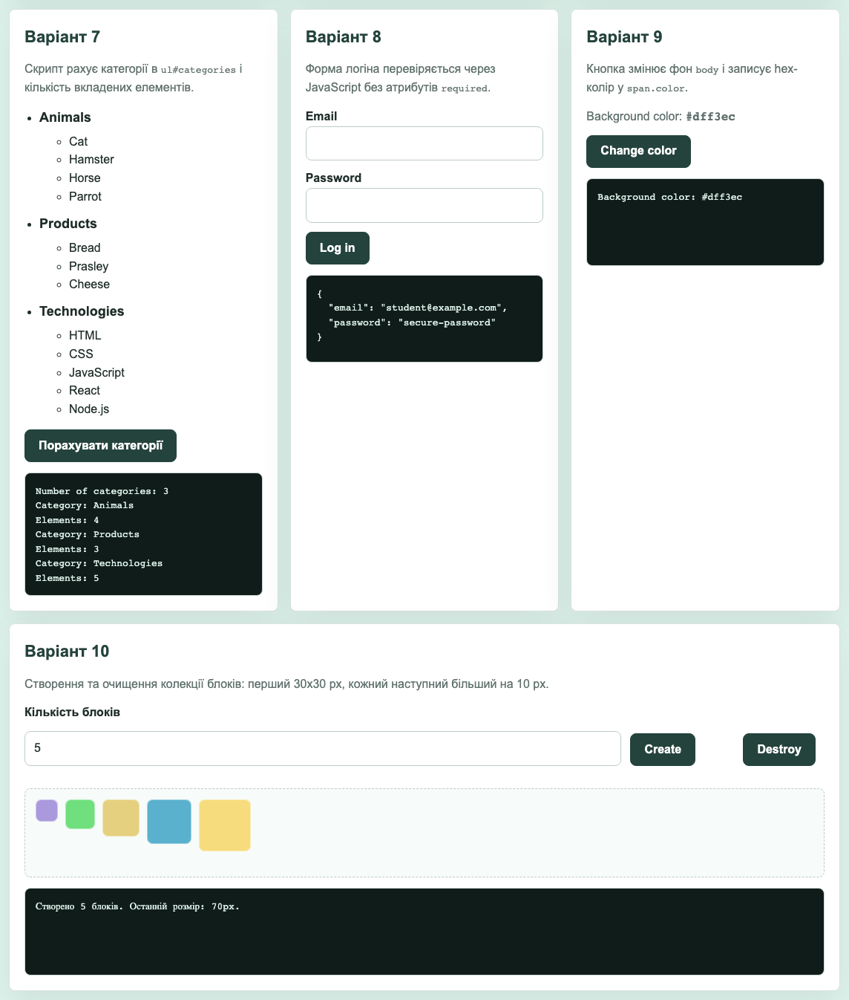
Кнопка "Запустити всі демо" виконує контрольний сценарій: показує значення input, приховує текст, перевіряє клік у #place, рахує категорії, обробляє форму, змінює фон, створює блоки і відкриває модальне вікно через делегування.
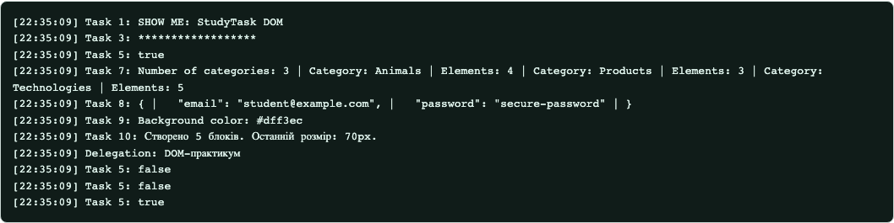
У лабораторній роботі №6 реалізовано роботу з DOM-елементами, обробниками подій, об'єктом події, формою login, inline-стилями, створенням DOM-вузлів і делегуванням подій. Для перевірки створено окрему сторінку WEB-застосунку, загальний файл style.css і JS-модуль assets/lab6.js з експортом функцій у window.Lab6 для executable-перевірок.
Тема: модульність коду, Node.js, JSON, Web Storage API, асинхронність, проміси, HTTP-запити, REST API, AJAX, крос-доменні запити, пагінація, CRUD.
| Мета | Придбати практичні навички роботи з Web Storage API, промісами, асинхронними HTTP-запитами, REST API, модальними вікнами, пагінацією та динамічним створенням DOM-елементів. |
|---|---|
| Особливість джерела | Файл завдання має назву ЛР №7, але внутрішній заголовок документа містить "ЛАБОРАТОРНА РОБОТА №8". У цьому звіті роботу оформлено як ЛР №7 відповідно до послідовності курсу. |
| Постановка задачі | У власному WEB-застосунку створити кошик із пагінацією. Додати галерею зображень із масиву даних і модальним переглядом, форму збереження даних у localStorage, таймер зворотного відліку, генератор промісів і пошук зображень через Fetch API/Pixabay або локальний демо-набір без ключа. |
| WEB-застосунок | StudyTask: сторінка ЛР №7 Web Storage і асинхронність |
| HTML/CSS/JS-файли | lab7-storage.html, style.css, assets/lab7.js |
| GitHub/GitHub Pages | WEB-репозиторій, сторінка ЛР №7 на GitHub Pages. |
У WEB-застосунку створено каталог навчальних товарів, який розбивається на сторінки. Кошик зберігається у localStorage, підтримує додавання, видалення і очищення позицій.
function paginateItems(items, page, perPage) {
const totalPages = Math.max(1, Math.ceil(items.length / perPage));
const safePage = Math.min(Math.max(1, page), totalPages);
const start = (safePage - 1) * perPage;
return {
items: items.slice(start, start + perPage),
page: safePage,
totalPages,
};
}
function addToCart(productId) {
cartState.items[productId] = (cartState.items[productId] || 0) + 1;
saveCart();
renderCart();
return { ...cartState.items };
}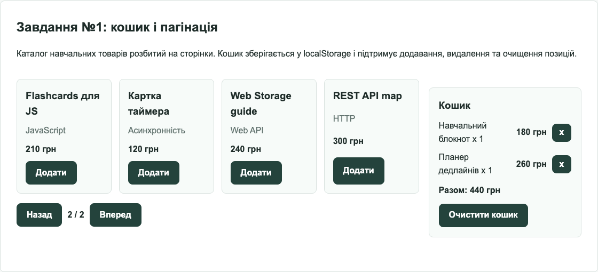
Галерея створюється динамічно з масиву images. Клік обробляється делегуванням на ul.gallery. Якщо CDN-бібліотека basicLightbox доступна, відкривається її модальне вікно; інакше використовується локальний fallback.
function renderGallery() {
const gallery = document.querySelector(".lab7-gallery");
gallery.innerHTML = images
.map((image) => `<li class="gallery-item">
<a href="${image.original}">
<img src="${image.preview}" alt="${escapeHtml(image.description)}" loading="lazy">
</a>
<p>${escapeHtml(image.description)}</p>
</li>`)
.join("");
}
function handleGalleryClick(event) {
const link = event.target.closest("a");
const gallery = event.currentTarget;
if (!link || !gallery.contains(link)) return;
event.preventDefault();
openGalleryModal(link.href, link.querySelector("img").alt);
}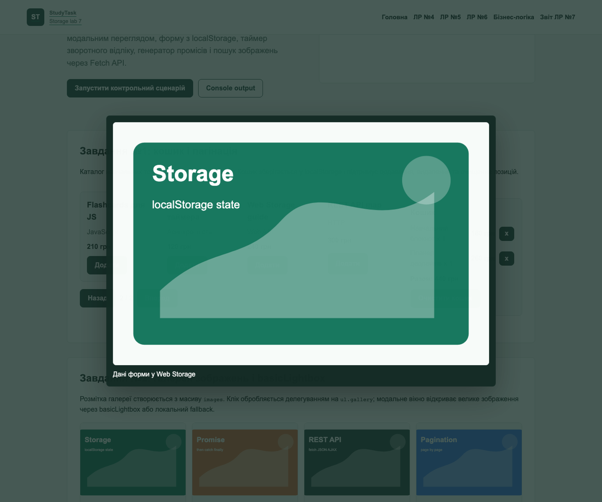
Форма має поля email і message. Введені дані зберігаються у localStorage під ключем feedback-form-state, відновлюються після перезавантаження сторінки, перевіряються перед submit і очищаються після успішної відправки.
const formData = {
email: "",
message: "",
};
function handleFeedbackInput(event) {
const field = event.target;
if (!Object.prototype.hasOwnProperty.call(formData, field.name)) return;
formData[field.name] = field.value.trim();
saveJson("feedback-form-state", formData);
}
function submitFeedback(form) {
if (!formData.email || !formData.message) {
alert("Fill please all fields");
return { ok: false, data: { ...formData } };
}
const submitted = { ...formData };
localStorage.removeItem("feedback-form-state");
form.reset();
return { ok: true, data: submitted };
}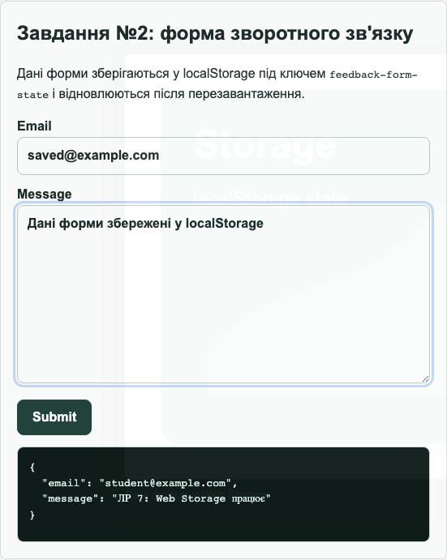
Таймер використовує convertMs() і форматування через padStart(). Генератор промісів створює Promise, який виконується або відхиляється після вказаної затримки, а результат проходить через then(), catch() і finally().
function convertMs(ms) {
const second = 1000;
const minute = second * 60;
const hour = minute * 60;
const day = hour * 24;
return {
days: Math.floor(ms / day),
hours: Math.floor((ms % day) / hour),
minutes: Math.floor(((ms % day) % hour) / minute),
seconds: Math.floor((((ms % day) % hour) % minute) / second),
};
}
function createPromise(delay, state) {
return new Promise((resolve, reject) => {
setTimeout(() => {
if (state === "fulfilled") resolve(delay);
else reject(delay);
}, delay);
});
}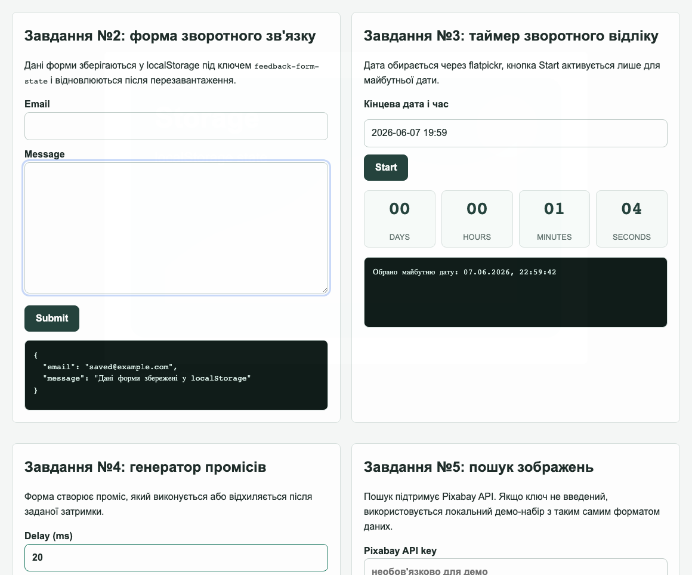
Форма пошуку підтримує запит до Pixabay з параметрами key, q, image_type=photo, orientation=horizontal, safesearch=true. Без API key використовується локальний демо-набір з форматом відповіді Pixabay, що дозволяє перевірити DOM-рендер, loader, empty/error paths і Promise chain.
function fetchPixabayImages({ query, apiKey, page = 1, perPage = 12, fetcher = fetch }) {
if (!query.trim()) {
return Promise.reject(new Error("Search query is empty"));
}
if (!apiKey.trim()) {
const hits = mockPixabayHits.filter((hit) => hit.tags.toLowerCase().includes(query.toLowerCase()) || query === "study");
return new Promise((resolve) => {
setTimeout(() => resolve({ hits, totalHits: hits.length, synthetic: true }), 120);
});
}
return fetcher(buildPixabayUrl({ query, apiKey, page, perPage }))
.then((response) => {
if (!response.ok) throw new Error(`Pixabay HTTP ${response.status}`);
return response.json();
})
.then((data) => ({ ...data, synthetic: false }));
}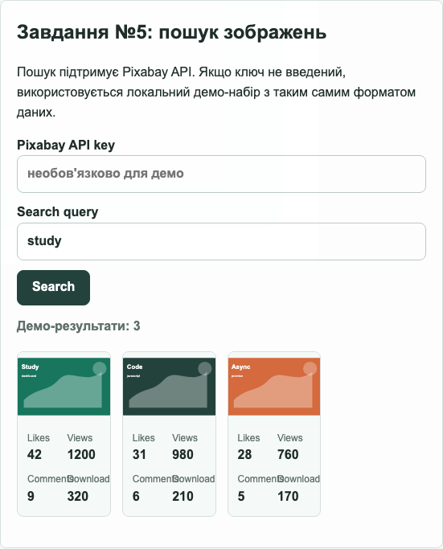
Кнопка "Запустити контрольний сценарій" перевіряє кошик, галерею, localStorage-форму, таймер, проміс і пошук зображень. Ключові результати дублюються у блок Console output.
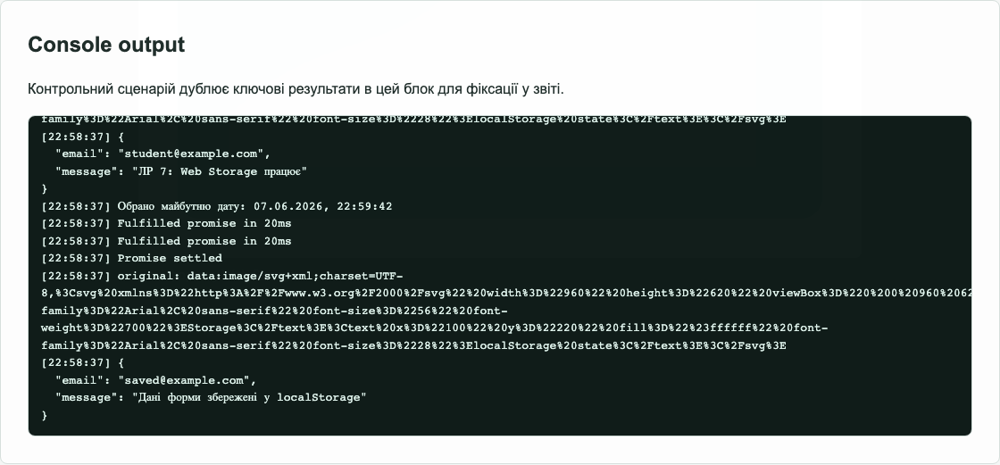
У лабораторній роботі №7 реалізовано практичну роботу з Web Storage API, JSON-серіалізацією, пагінацією, делегуванням подій, модальними вікнами, таймером, промісами, Fetch API та DOM-рендером результатів пошуку. Для перевірки створено окрему сторінку WEB-застосунку і JS-модуль assets/lab7.js з експортом функцій у window.Lab7.